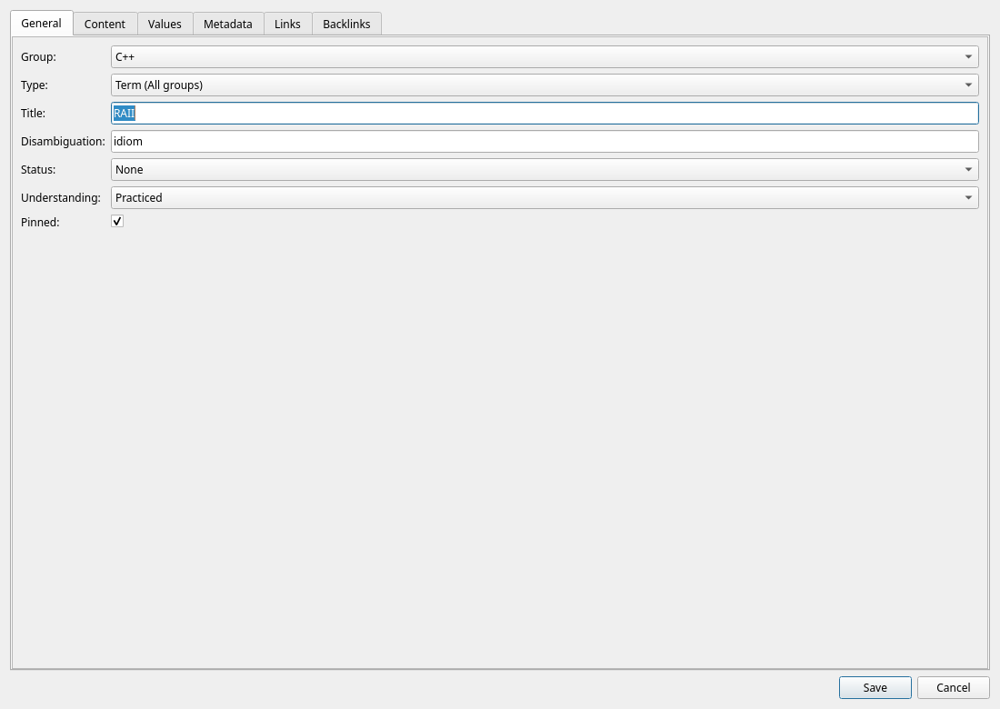
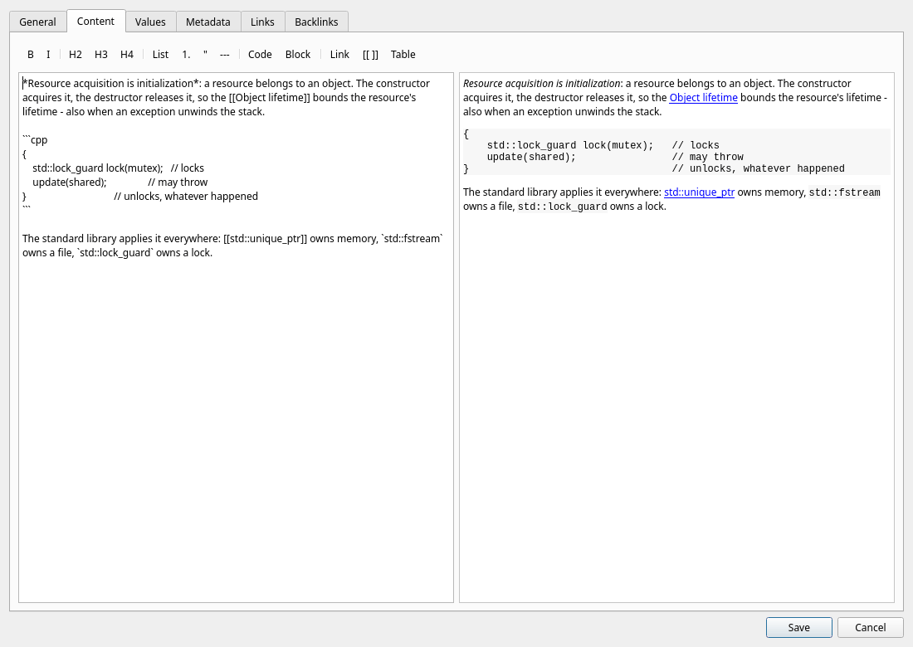
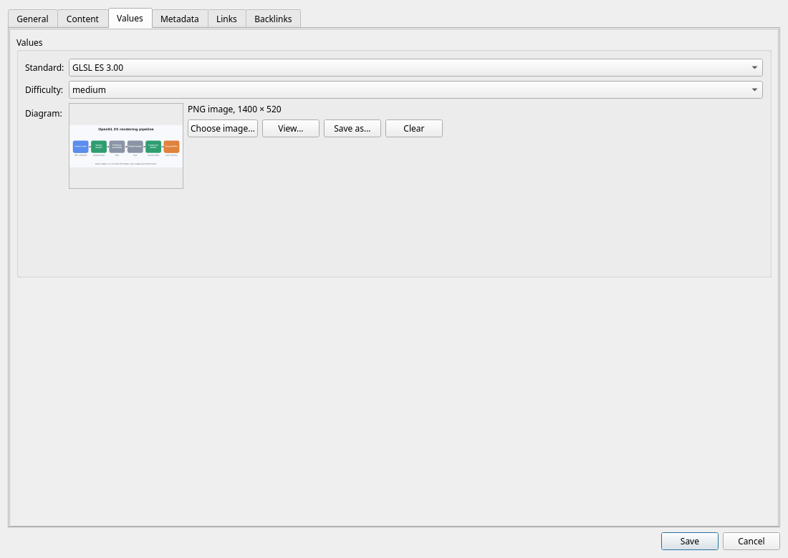
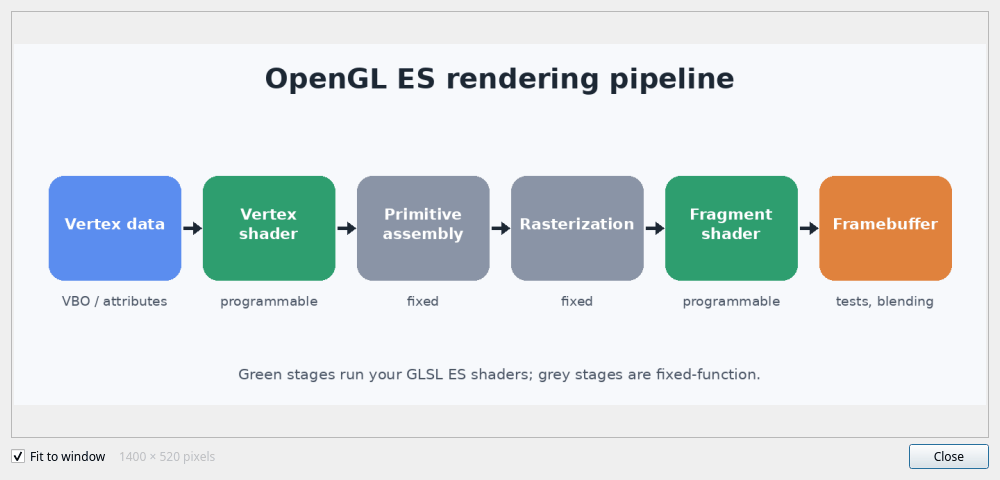
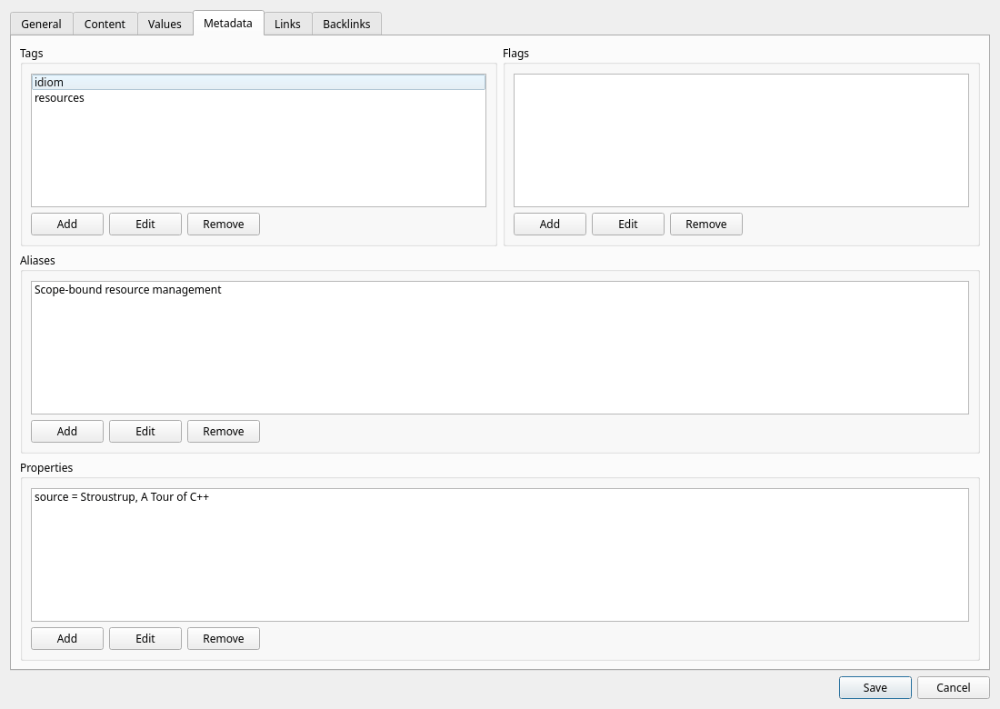

Editing items
Double-click an item (or click Edit) to open the item editor. Six tabs cover everything: General, Content, Values, Metadata, Links, and Backlinks. This chapter covers the first four; links get their own chapter.
General tab — identity and state

| Field | Purpose |
|---|---|
Group | Which group the item belongs to. |
Type | Optional class for this item. Global types and types scoped to its group appear here. |
Title | The item's name. Required. |
Disambiguation | Optional qualifier that lets the same title exist more than once in one group — e.g. Index (database) vs. Index (array). |
Status | Editorial state of the entry: None, Draft, or Completed. |
Understanding | How well you understand the concept — see the scale below. |
Pinned | Marks important items so you can filter for them instantly. |
Use Manage → Types... to create or edit types, their descriptions, and their fields. Descriptions appear as tooltips in the type manager.
When a type has custom field values, changing it asks for confirmation before discarding those values. Deleting a type also clears its assignment and custom values on every affected item, with a confirmation showing the affected item count.
The understanding scale
Lexicon is a learning tool, so it tracks your personal mastery of every concept:
| Level | Meaning |
|---|---|
| Unknown | Never encountered the concept. |
| Recognized | Seen before, can identify it. |
| Understood | Conceptually grasped. |
| Practiced | Can apply it in real situations. |
| Mastered | Fully internalized — can teach or innovate. |
The level is also the schedule Review brings an item back 1, 2, 5, 12 or 30 days after you last saw it, following exactly this scale — and a rating moves the level for you. Filtering for Understanding = Recognized still gives an instant list of what to revisit.
Content tab — write in Markdown

The Content tab is a split view: the left pane holds the raw Markdown, the right pane renders it as HTML. The preview updates automatically as you type.
The formatting toolbar inserts Markdown for you:
- Bold and italic
- H2 / H3 / H4 headings
- Bullet lists and quotes
- Horizontal rules
- Inline code and fenced code blocks
- Links and tables
A typical item might look like this:
## Definition
**Move semantics** transfer resources instead of copying them.
## Key points
- introduced in C++11
- enabled by rvalue references (`T&&`)
- `std::move` is just a cast
## Example
```cpp
std::vector<int> a = make_data();
std::vector<int> b = std::move(a); // no copy
```Write [[Title]] to point at another item; in the preview it opens that item, and Lexicon offers to create it when there is none. See Links & relationships.
Values tab — custom fields
When an item has a type, its Values tab shows that type's fields in position order. Fields can use integer, float, text, date, time, timestamp, boolean, enum, blob, or other values. Date/time values use ISO format; enum fields show their configured choices. The tab is disabled when the item has no type.
For a blob field, enter a file path or choose one with Browse.... Click Import to see its SHA-256 hash immediately, or save the item to import the entered path. This replaces that item's previous blob value. The bytes are stored under blobs next to lexicon.db; Save as... exports the current file.

Image fields
An Image field holds a picture — a diagram, a formula, a photo of a whiteboard:
- Choose image... stores a PNG, JPEG, GIF, WebP or BMP file. The kind is read from the file itself, not from its name.
- The editor shows a thumbnail and what the image is; View..., or a click on the thumbnail, opens it at full size.
- Save as... writes the picture back to a file and Clear removes it.
- The item preview shows every image under the item's content, and the item table shows a small picture in the column of that field.
The web client and the Android app choose, show and save images the same way — including the full-size viewer.

In the main window, selecting a specific Type adds columns for these values and filters for each field. Text filters match part of a value; other fields use exact matches.
Metadata tab — tags, flags, aliases, properties

| Kind | Use for | Examples |
|---|---|---|
| Tags | Classification — topics, versions, domains. | cpp20, templates, concurrency |
| Flags | Workflow markers — priority or state you act on. | review, needs-example, important |
| Aliases | Alternate names, abbreviations, spellings — all searchable. | RAII, ctor, k8s |
| Properties | Additional text key/value pairs specific to an item. | source = book |
Keep vocabulary consistent Prefer one canonical spelling per tag (e.g. always cpp20, never a mix with c++20). The global overviews show every tag, flag, and alias with usage counts — perfect for spotting duplicates.
Tags vs. flags If it describes what the item is about, it's a tag. If it describes what you still need to do with it, it's a flag.
Saving, and what happens if someone else was faster
Every item carries a revision that moves on with each change to it, its values or its links. If another client — the desktop, the browser or the phone — saved the item after you opened it, your save is not written silently over theirs. Lexicon lists what differs and offers to Overwrite the newer version, Reload it and drop your changes, or go back to editing.